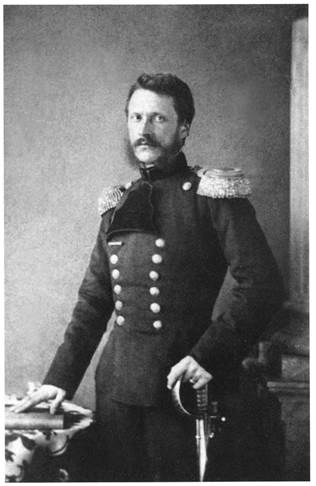
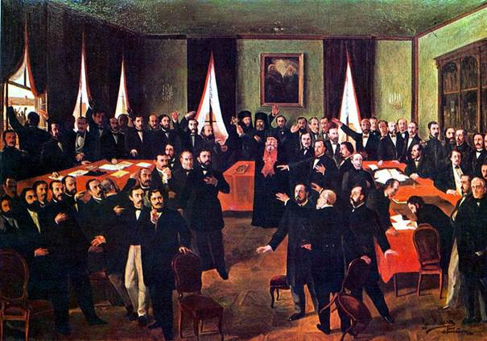
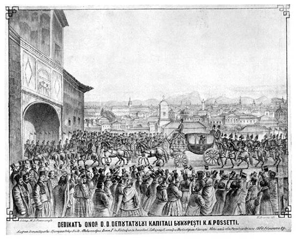

Unirea Principatelor Române
sau Unirea Micã
1848
Unirea
Principatelor Române a avut loc la jumãtatea secolului al XIX-lea și
reprezintã unificarea vechilor state Moldova și Țara Româneascã.
Unirea este strâns legatã de personalitatea lui Alexandru Ioan Cuza și de
alegerea sa ca domnitor al ambelor principate la 5 ianuarie 1859 în Moldova și
la 24 ianuarie 1859 în Țara Româneascã. Totuși, unirea a fost un
proces complex, bazat pe puternica apropiere culturalã și economicã între
cele douã țãri. Procesul a început în 1848, odatã cu realizarea uniunii
vamale între Moldova și Țara Româneascã, în timpul domniilor lui
Mihail Sturdza, respectiv Gheorghe Bibescu. Deznodãmântul rãzboiului Crimeii a
dus la un context european favorabil realizãrii unirii. Votul popular favorabil
unirii în ambele țãri, rezultat în urma unor adunãri ad-hoc în 1857 a dus
la Convenția de la Paris din 1858, o înțelegere între Marile Puteri
prin care se accepta o uniune mai mult formalã între cele douã țãri, cu
guverne diferite și cu unele instituții comune; principatele trebuiau
sã se numeascã Principatele Unite Moldova și Valahia. La începutul anului
urmãtor, liderul unionist moldovean Alexandru Ioan Cuza a fost ales ca domnitor
al Moldovei și Țãrii Românești, aducându-le într-o uniune
personalã. În 1862, cu ajutorul unioniștilor din cele douã țãri, Cuza
a unificat Parlamentul și Guvernul, realizând unirea politicã. Dupã
înlãturarea sa de la putere în 1866, unirea a fost consolidatã prin aducerea pe
tron a principelui Carol de Hohenzollern-Sigmaringen,
iar constituția adoptatã
în acel an a denumit noul stat România.
Alexandru Ioan Cuza (sau Alexandru Ioan I; n. 20 martie/1 aprilie 1820, Bârlad,
Moldova – d. 3 mai 1873, Heidelberg, Imperiul German) a fost primul domnitor al
Principatelor Unite și al statului național România. A participat
activ la mișcarea revoluționarã de la 1848 din Moldova și la
lupta pentru unirea Principatelor. La 5 ianuarie 1859, Cuza a fost ales domn al
Moldovei, iar la 24 ianuarie 1859 și al Țãrii Românești,
înfãptuindu-se astfel unirea celor douã principate. Devenit domnitor, Cuza a
dus o susținutã activitate politicã și diplomaticã pentru recunoașterea
unirii Moldovei și Țãrii Românești de cãtre Puterea suzeranã și
Puterile Garante și apoi pentru desãvârșirea unirii Principatelor
Române pe calea înfãptuirii unitãții constituționale și
administrative, care s-a realizat în ianuarie 1862, când Moldova și Țara
Româneascã au format un stat unitar, adoptând oficial, în 1862, numele de
România și formând statul român modern, cu capitala la București, cu
o singurã adunare și un singur guvern. Cuza a fost obligat
sã abdice în anul 1866 de cãtre o largã coaliție a partidelor vremii,
denumitã și Monstruoasa Coaliție, din cauza orientãrilor politice
diferite ale membrilor sãi, care au reacționat astfel fațã de
manifestãrile autoritare ale domnitorului.
Ordinea
geopoliticã a Europei în anii 1815-1853, a Rusiei și a Imperiului Otoman,
se stabilise ultima oarã la Congresul de la Viena din 1815. Între timp însã
echilibrul astfel stabilit a început sã se destrame, îndeosebi din cauza crizei
interne în Imperiul otoman, denumit "omul bolnav de la Bosfor",
principatele Române aflându-se în vasalitate în raport cu Imperiul Otoman. Încã
din anii de dinainte Rusia țaristã începuse planurile sale de expansiune
în direcția Europei centrale și a Balcanilor, cu o tendințã
revanșardã în restabilirea influenței sale istorice și în
Moldova și în Țara Româneascã. Folosind ca pretext probleme religioase
ale ortodoxiei în Imperiul Otoman și beneficiind de slãbiciunea
Imperiului, Rusia a început în 1853 așa zisul "Rãzboi al
Crimeii" împotriva
Imperiului
Otoman, ocupând Principatele Române. Situația geopoliticã a Europei,
dirijatã de Franța, Anglia și Austria, însã era deja de dinainte
orientatã în a asigura existența și integritatea Imperiului Otoman
pentru a contracara o creștere a influenței Rusiei și în Orient,
dupã ce deja Rusia se extinsese în Asia în contra intereselor franceze și
engleze. Astfel Franța si Anglia au intrat în acest rãzboi de partea
Imperiului Otoman contra Rusiei, în concordanțã și cu interesele și
politica externã a Austriei în privința "principatelor
dunãrene". Rãzboiul Crimeii s-a încheiat prin armistițiu, cu
propuneri din partea tuturor puterilor europene, convenind a fixa o nouã situație
geopoliticã a Europei de est în context cu Rusia și Imperiul Otoman, fiind
astfel planificate convorbiri la Constantinopol și Paris în vederea
elaborãrii tratatelor corespunzãtoare, având ca țel slãbirea influenței
Rusiei în Orient și în Marea Neagrã, care avea sã devinã o mare neutrã.
Astfel a intrat în atenția marilor puteri ale politicii europene și
situația "principatelor dunãrene", Moldova și Țara
Româneascã. Deși Austria nu a participat la rãzboi, a cerut în 3 Iunie
1854, Rusiei sã se retragã din Principatele Române, în virtutea propriilor
interese și într-adevãr Rusia s-a retras. Însã în mod neașteptat
atunci Imperiul Austriac a ocupat Principatele Române, plasând în octombrie
1854, 300.000 de soldați la granița Moldovei cu Rusia. În contextul
problemei "principatelor dunãrene" au jucat un rol multe alte
probleme de echilibrare a situației generale. Amânarea rezolvãrii s-a
datorat diferențelor de pãreri în cadrul alianței învingãtorilor.
Conceptului Franței asupra unor principate unite i s-a raliat Rusia din
motive tactice, însã în totalã contradicție cu pãrerea Austriei și
Imperiului Otoman. Anglia a luat o poziție indecisã. În alianța
învingãtoare exista unanimitate cã protectoratul istoric al Rusiei asupra
principatelor trebuie sã se termine, cu o "derusificare"
a principatelor de influența Rusiei în culturã și administrație,
însã exista lipsa unanimitãții privind statutul organizatoric viitor al
principatelor. Principatele Române erau în concepția lui Napoleon al III
-lea cele mai potrivite pentru a-și promova ideea principiului național,
în propriul interes al Franței, în Europa cât și a remanierii hãrții
europene în urma eșecului francez din 1815.
Astfel ideea unirii principatelor române
s-a nãscut pe plan internațional în împrejurimea împãratului francez
Napoleon III, bineînțeles din interese proprii franceze.
Însã ambasadorii Angliei și a Austriei, Redcliffe si Prokesch-Osten, se strãduiau sã lege Principatele Unite iarãși mai puternic de Imperiul Otoman. Expresia acestei strãdanii a fost un concept preliminar de tratat din 11 Februarie 1856 cu 30 de articole, prezentat ministrului de externe al Înaltei Porți, conținând idei de bazã privind organizarea și statutul viitor al principatelor. («Projet concernant le 1-er point de garanție arrêté entre les Representants des trois Puissances et ceux de la S. Porte dans la réunion du 11 Fevrier» (HHSTA, PA XII 56 f. 256-266)). In acest concept se precizeazã cã în virtutea rãzboiului, tratatele ruso-turce privind organizarea internã a principatelor în acel «Reglement organique» (Regulament Organic) încã de dinainte de 1828 și-au pierdut valabilitatea. În acest sens, Înalta Poartã avea de reînnoit imunitatea și privilegiile sale care i-au fost acordate încã de pe timpul lui Baiazid I, reținându-se în art. 2 cã Moldova si Țara Româneascã rãmân parte integrantã a Imperiului Otoman supuse suzeranitãții sultanului.
Însã ideea unor principate unite a stârnit o rezistentã deosebitã la Viena și la Înalta Poartã. În politica austriacã la Viena existau îngrijorãri cã românii vor simți suzeranitatea otomanã ca o nedreptate și vor cere un stat independent, care ar putea cuprinde atunci și Bucovina, pe atunci austriacã, și partea românã a Transilvaniei, creând un precedent istoric și pentru Serbia care s-ar putea sprijini pe susținerea Rusiei, aceastã situație în totalitate lovind interesele Austriei "pânã în mãduva oaselor". Exista pãrerea cã acestui principiu distrugãtor al naționalismului, care în mod fericit a fost supus în 1849, Austria voia a-i opune principiul "mai înãlțãtor și împãciuitor al statalitãții" interdependent de naționalitate. În aceastã chestiune însã împãratul austriac Franz Joseph I a avut o cu totul altã pãrere. El a promovat ideea cã principatele aveau sã rãmânã neunite, dar în nici un caz nu aveau sã fie legate mai strâns de Înalta Poartã, ci din contrã, independența lor trebuie întãritã, dând ordin reprezentantului sãu la Paris sã se opunã strict voinței otomane de a-și întinde influența în acea zonã a Europei.
In concluzie, trebuie sã reținem cã unirea principatelor a fost un proiect politic al împãratului francez Napoleon III, din douã motive de politicã externã în favoarea intereselor Franței: în primul rând a fost un proiect antirusesc de-a îngrãdi și a pune o barierã în extinderea intereselor rusești, iar în al doilea rând a fost impunerea "principiului națiunii" pentru a submina principiile Congresului de la Viena din 1815, ca armã politicã a Austriei.
Peste acest context fericit geopolitic european, s-a suprapus dorința și voința populației și a pãturilor conducãtoare din cele douã principate încã din 1600, când lui Mihai Viteazul i-a reușit pentru scurt timp o unificare a douã principate de culturã si proveniențã înrudite istoric. Însã trebuie sã luãm în considerare cã acest moment favorabil al istoriei geopolitice europene a avut un rol hotãrâtor în acest act de unire.
Actul istoric de la 24 ianuarie 1859 reprezenta primul pas pe calea înfãptuirii statului național român unitar. Impusã sub o puternicã presiune popularã, cu deosebire la București, alegerea ca domn al Țãrii Românești a lui Alexandru loan Cuza avea sã-și gãseascã o confirmare deplinã la marea manifestare prilejuitã de sosirea alesului națiunii în capitala munteanã.
Cea mai stringentã problemã era recunoașterea internaționalã a alegerilor. Faptul împlinit la 24 ianuarie 1859 era considerat de Poartã și de Austria drept o încãlcare a Convenției de la Paris. Situația creatã în cele douã Principate urma sã facã, de altfel, obiectul unei noi Conferințe internaționale, care se deschidea la Paris, la 26 martie/7 aprilie - 25 aug./6 sept. Misiuni speciale, conduse de persoane apropiate lui Alexandru I. Cuza, au vizitat capitalele Marilor Puteri garante și au reușit sã câștige sprijin pentru cauza româneascã. Încã în a doua ședințã a Conferinței (1/13 aprilie) Franța, Rusia, Anglia, Prusia și Sardinia au recunoscut dubla alegere de la 24 ianuarie 1859. Imperiul Otoman și Austria însã tergiversau; mai mult, se aflã cã se punea la cale o intervenție militarã peste Dunãre. Alexandru I. Cuza rãspunse energic. La 20 aprilie, la Florești, între Ploiești și Câmpina, armata moldo-munteanã era concentratã spre a face fațã oricãrei situații. Dupã alte amenințãri, sub presiunea celorlalte puteri garante, Poarta a acceptat oficial, odatã cu Austria, în a 3-a ședințã a Conferinței de la Paris (25 august/7 septembrie), sã recunoascã, la rândul ei, dubla alegere. Detensionarea situației, atât în relațiile cu Imperiul Otoman, cât și cu cel Habsburgic, îl determinã pe domn sã ordone închiderea taberei de la Florești (1 septembrie 1859).
Astfel
împlinitã recunoașterea situației de fapt, impusã la 24 ianuarie,
obiectivul imediat urmãtor era acceptarea de cãtre puterile garante a Unirii
depline. Fãrã a aștepta verdictul altor reuniuni internaționale,
Alexandru I. Cuza a trecut la unificarea aparatului de stat, remediind din mers
consecințele hotãrârilor adoptate prin Convenția de la Paris.
Misiunile diplomatice ale Principatelor la Constantinopol erau reunite încã în
cursul anului 1859 (martie), cu Costache Negri, recunoscut chiar de cãtre
Poartã, drept unic reprezentant al celor douã țãri. Unificarea armatei
începea cu deplasãri de unitãți militare moldovene, la București și
muntene, la Iași; tabãra de la Florești s-a bucurat de o comandã
unicã. În cursul anului 1860, statele majore, instrucția, administrația
și intendența au fost așezate sub o singurã autoritate, iar
aceeași persoanã - generalul Ion Emanoil Florescu - a fost numitã în funcția
de ministru de rãzboi în ambele țãri. La serviciul telegrafului moldovean și
muntean este numit ca inspector general Cezar Librecht.
La Focșani, nu fãrã dificultãți, își începuse activitatea Comisia Centralã care, potrivit Convenției de la Paris, trebuia sã elaboreze legile, comune celor douã țãri. În cei trei ani de activitate (1859- 1862) din proiectele sale au fost aprobate de Adunarea electivã și promulgate de domn doar cele referitoare la Curtea de Casație și la domeniul funciar (care traducea în fapt principiul egalitãții fiscale). Proiectul de Constituție nu a fost aprobat însã de domnitorul Cuza, Comisia Centralã din Focșani fiind desființatã în 9/21 februarie 1862.[4] Termenul de România, care fusese frecvent folosit, dar neoficial, în anii 1850 cu referire la un stat unitar, situat între Marea Neagrã și Munții Carpați, a devenit acum numele curent al Principatelor Unite și, începând din 1862, a fost folosit în actele oficiale ale țãrii.
Raporturile cu acele puteri garante care se arãtau ostile unirii sau care jucaserã, în trecut, un rol important în viața Principatelor (Rusia, în anii „protectoratului”) au fost bazate, încã din primii ani ai domniei lui Alexandru I. Cuza, pe respectarea neștirbitã a autonomiei țãrii nou-constituite. Astfel, prezența militarilor otomani va fi categoric interzisã, iar Poarta va fi obligatã, în vara anului 1860, sã renunțe la pașapoartele sale solicitate cãlãtorilor români, în mai multe situații supușii Imperiului fiind reținuți pentru cã au produs diverse neorânduieli. Austria, vehement dușmãnoasã, a trebuit sã accepte cã legile statului român sunt valabile și pentru locuitorii cezaro-crãiești aflați aici cu afaceri. Maghiarii și polonezii, care voiau sã rãmânã în Principate sau sã tranziteze spre alte regiuni, sunt protejați de guvern și de domn în spiritul dreptului la azil politic, oferindu-li-se la plecare chiar mijloacele necesare.
Franța, apoi Rusia, Italia și Prusia erau de acord cu unirea deplinã. Alexandru I. Cuza aștepta hotãrârea Conferinței de la Constantinopol convocatã în acest scop. Cum era de așteptat, încã din prima ședințã Poarta a cerut dreptul de intervenție în Principate, în cazul unor noi încãlcãri ale Convenției de la Paris, iar Austria a admis unirea doar pe durata domniei lui Alexandru I. Cuza. La începutul lunii noiembrie 1861 firmanul (decretul) Unirii era prezentat, dar în condiții considerate, în țarã, inacceptabile.
Fermitatea lui Alexandru I. Cuza, reacția energicã Camerelor și a guvernelor, poziția intransigentã a lui C. Negri și atitudinea favorabilã a majoritãții Marilor Puteri garante și-au fãcut în cele din urmã efectul. La sfârșitul Conferinței de la Constantinopol, Poarta a elaborat un nou firman (4/16 decembrie 1861) prin care a renunțat la condițiile anterior solicitate, Austria pãstrându-și vechea poziție.
În
ianuarie 1862, guvernele separate din Principate au demisionat pentru a da
posibilitatea alcãtuirii la București a primului guvern unic al României. Șirul
de reforme inițiate de Cuza și venirea mai apoi pe tronul
Principatelor Unite a domnitorului Carol I, care se bucura atât de sprijinul
Franței cât și de cel al Prusiei, a fãcut ca actul de la 1859 sã fie
ireversibil. Din 1866, potrivit Constituției promulgate la 1 iulie,
Principatele Unite încep sã se numeascã oficial România.
